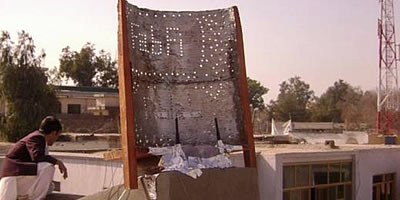
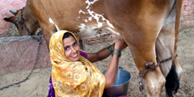

Fab Lab
Anyone can use the Fab Lab facilities to design and make pretty much anything from jewellery and t-shirts to furniture, farming technology, circuit boards, gadgets, toys, renewable energy technology, solar powered houses and even baking products! The facilities can help inspire creative and innovative thinking, providing anyone with the opportunity to have a go at making things they might never have thought possible! Children and adults can also share development projects with people working on similar ideas anywhere else in the world through the global digital Fab Lab network.
Fab Labs were born from an outreach project by Massachusetts Institute of Technology (MIT) in inner-city Boston in 2005 (see Youtube Video). Since then, Fab Labs have quickly spread from the inner cities of the USA to India, Afghanistan, Europe, the villages of Africa and around the world.
The MaidSafe Foundation aims to open the doors of a Fab Lab in Troon on the west coast of Scotland towards the end of 2011 and is keen to help facilitate the development of more Fab Labs around the world.
Local solutions for local problems
Here are a few things that have been made in Fab Labs across the world:
-
Afghanistan
In Afghanistan, ‘Fab Labbers’ are creating antennas to extend the range of wireless internet bringing communities together.
Read this fantastic story! -
Barcelona

In Barcelona, a solar powered house has been developed which can transform the way we live in a fully sustainable and environmentally friendly way. Check out this link to find out more: http://www.fablabhouse.com/en/
-
South Africa
In South Africa, a government and business backed project is creating simple internet connected computers that hook up to televisions and cost just ten dollars each.
-
India
In India, an electronic sensor to test the quality of milk has been developed that could ensure contaminated milk does not spoil larger batches sold to wholesalers by farmers.